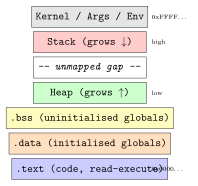

Chapter 24: Exploit Development Fundamentals¶
Exploit development is the discipline of converting a confirmed vulnerability into a controlled, reliable program flow deviation. This chapter covers the technical foundations of memory corruption exploitation, the tools used by security researchers, and the mitigations that defenders deploy. All content is presented for educational and defensive purposes; no working shellcode is included.
Legal and Ethical Scope
Exploit development skills must only be applied to systems for which you have explicit written permission. Unauthorised exploitation is a criminal offence in virtually all jurisdictions (e.g., the Computer Fraud and Abuse Act in the USA, the Computer Misuse Act in the UK).
24.1 Process Memory Layout¶
Understanding how a process is laid out in virtual memory is the foundation of all memory-corruption exploitation.

The stack grows downward; each function call pushes a stack frame containing saved registers, local variables, and the return address. The return address is the prime target in classical stack buffer overflow exploitation.
24.2 Stack Buffer Overflow¶
Definition 24.1 (Stack Buffer Overflow)
A stack buffer overflow occurs when data written into a fixed-size stack buffer exceeds the buffer’s allocated length, overwriting adjacent stack memory including, ultimately, the saved return address.
When the vulnerable function returns, the CPU loads the attacker-controlled return address into RIP and execution transfers there.
24.2.1 Finding the Offset¶
The pwntools library provides cyclic patterns for offset discovery:
from pwn import *
# Generate a 200-byte De Bruijn cyclic pattern
pattern = cyclic(200)
print(pattern)
# Send pattern to the binary, observe crash value in RIP
# After crash, find the offset
crashed_rip_value = 0x6161616261616161 # from debugger
offset = cyclic_find(crashed_rip_value)
print(f"[*] Offset to RIP: {offset} bytes")
24.2.2 Classic Exploitation Flow (Conceptual)¶
-
Determine the exact number of bytes to the saved return address (the offset).
-
If NX is disabled, place a payload (e.g., shellcode) on the stack and redirect execution to it.
-
If NX is enabled (the common case), use ret2libc: redirect execution to an existing library function such as
system().
from pwn import *
# Attach to the local process (for research/CTF purposes)
elf = ELF('./vuln')
libc = ELF('/lib/x86_64-linux-gnu/libc.so.6')
p = process('./vuln')
# Assume we have already leaked a libc address (see Section 24.4)
libc.address = leaked_base
offset = 72 # bytes to saved return address
pop_rdi = p64(0x0000000000401234) # ROP gadget: pop rdi; ret
ret_gadget = p64(0x000000000040101a) # stack-alignment gadget
system = p64(libc.sym['system'])
bin_sh = p64(next(libc.search(b'/bin/sh')))
# Payload: padding | pop_rdi | "/bin/sh" addr | ret (align) | system()
payload = b'A' * offset
payload += pop_rdi
payload += bin_sh
payload += ret_gadget
payload += system
p.sendline(payload)
p.interactive()
# Note: this template illustrates structure only; real exploitation
# requires a working binary and explicit authorisation.
24.2.3 Heap Exploitation Fundamentals¶
The heap is the other major memory corruption target. Understanding glibc’s allocator internals—ptmalloc2—is essential for exploiting use-after-free and heap overflow bugs.
Every heap allocation in glibc is wrapped in a chunk whose header immediately precedes the user data. A free chunk contains two additional pointer fields overlaid on what was user data:
| Field | Offset (64-bit) | Purpose |
|---|---|---|
prev_size |
chunk - 16 |
Size of previous chunk (if free) |
size |
chunk - 8 |
Size of this chunk; low 3 bits are flags |
fd |
chunk + 0 |
(Free only) Forward pointer to next free chunk |
bk |
chunk + 8 |
(Free only) Back pointer to previous free chunk |
The classic unlink exploit (glibc pre-2.3.4) abused the doubly-linked free list: writing attacker-controlled fd and bk pointers into a free chunk header, then triggering a coalesce operation, caused glibc’s unlink macro to write an arbitrary value to an arbitrary address. Modern glibc adds safe-unlink checks that verify fd->bk == chunk and bk->fd == chunk before unlinking, defeating this primitive unless both pointers are controlled simultaneously.
Safe-linking (glibc 2.32+) adds an additional mitigation for tcache and fastbin free lists. The fd pointer of a freed chunk is no longer stored in plaintext but is mangled as:
This means an attacker who can write to the fd field but doesn’t know the chunk’s own address cannot directly forge a valid pointer, because the XOR key depends on the chunk address. An information leak that reveals a heap address is now a prerequisite for tcache poisoning on glibc 2.32+.
Use-after-free (UAF) is the most productive heap exploit primitive on modern targets. The pattern:
-
Allocate object A of size \(n\); acquire a pointer
p. -
Free object A;
pis now a dangling pointer. -
Allocate object B of the same size \(n\) (the allocator reuses the same region for B).
-
Write attacker-controlled data into B via a separate reference.
-
Dereference
p—which now points into B—treating B’s data as A’s type (type confusion).
When object A is a C++ object containing a virtual function table (vtable) pointer, overwriting the vtable pointer in step 4 redirects the next virtual dispatch through p to an attacker-controlled function. This is the mechanism behind the majority of browser renderer exploits: the V8/SpiderMonkey JIT heap is full of objects with vtable pointers and the JavaScript engine creates and destroys objects at attacker-visible rates.
24.3 Return-Oriented Programming (ROP)¶
Definition 24.2 (Return-Oriented Programming)
ROP chains together short instruction sequences ending in ret (gadgets) that already exist in the binary or its libraries. Because these instructions reside in executable memory, NX/DEP is bypassed.
24.3.1 Finding Gadgets¶
ROPgadget --binary ./vuln --rop --depth 5
# Useful output examples:
# 0x0000000000401234 : pop rdi ; ret
# 0x000000000040101a : ret
# 0x0000000000401236 : pop rsi ; pop r15 ; ret
# Search for a specific gadget
ROPgadget --binary ./vuln --string "pop rdi"
A typical 64-bit ret2libc ROP chain for calling system("/bin/sh") is:
24.3.2 ret2libc and ret2plt¶
ret2libc is the canonical NX bypass: instead of injecting shellcode on the stack, you redirect the return address into an existing library function—most commonly system("/bin/sh") in libc. The ROP chain loads the string address into RDI (the first argument register on x86-64 System V ABI) using a pop rdi; ret gadget, then returns into system().
The obstacle is ASLR: libc’s base address is randomised each time the process loads. You need a leak gadget—a read primitive that reveals a runtime libc address—before you can compute system()’s address. A format string %p read, a GOT entry printed via a vulnerable puts call, or an out-of-bounds read all work as leak primitives. Once you have any libc address, subtract its offset from the libc symbol table to get the base, then add the system offset:
from pwn import *
libc = ELF('/lib/x86_64-linux-gnu/libc.so.6')
# Assume we leaked the address of puts() at runtime
leaked_puts = 0x7f3a4b2c1d40 # from info-leak exploit step
# The offset of puts in this libc version
puts_offset = libc.sym['puts'] # e.g. 0x80970
libc_base = leaked_puts - puts_offset
system_addr = libc_base + libc.sym['system']
bin_sh_addr = libc_base + next(libc.search(b'/bin/sh'))
print(f"libc base: {libc_base:#x}")
print(f"system(): {system_addr:#x}")
print(f"/bin/sh: {bin_sh_addr:#x}")
# Note: libc version must match exactly; ldd ./vuln shows which version
ret2plt is a related technique that doesn’t require an explicit libc leak. The Procedure Linkage Table (PLT) contains stubs for every dynamically linked function; calling the PLT stub for a function triggers the dynamic linker to resolve the real address if it hasn’t been called yet, or jumps directly to the cached address in the GOT if it has. An attacker can call puts@plt with the GOT address of puts as the argument; puts will print the raw 8-byte GOT entry (the runtime libc address of puts), converting a call primitive into a leak without a pre-existing read gadget. This is the standard two-stage ret2plt + ret2libc pattern for 64-bit CTF binaries:
-
Stage 1: Overflow, use ROP to call
puts@plt(got["puts"]), read the printed bytes, compute libc base. -
Stage 2: Return to
mainorvuln()to get a second overflow opportunity; this time use the known libc base to callsystem("/bin/sh").
24.4 Format String Vulnerabilities¶
Definition 24.3 (Format String Vulnerability)
A format string vulnerability arises when user-controlled input is passed directly as the format argument to printf or similar functions.
/* VULNERABLE: user controls the format string */
printf(user_input);
/* SAFE: user input is a data argument, not the format */
printf("
Format specifiers the attacker exploits:
-
%x/%p— read values off the stack (leak addresses for ASLR bypass). -
%n— write the number of bytes printed so far to the pointed-to integer; achieves arbitrary write. -
%k$x— direct parameter access: read the \(k\)-th argument (stack offset \(k\)).
24.4.1 The %n Write Primitive¶
The %n format specifier writes the count of bytes printed so far into the integer pointed to by the corresponding argument. Combined with a width specifier that pads output to a specific count, an attacker can write an arbitrary value to an arbitrary address. The format string "%100c%7$n" prints 100 characters of padding and then writes the value 100 into the memory location stored at stack argument position 7—if the attacker has placed a target address at that stack position (by controlling the format string buffer’s placement relative to the stack frame), this is a one-byte write to a chosen address.
Writing a full 8-byte pointer requires multiple %n writes, each targeting successive bytes of the destination address. The format string exploit is therefore verbose but extremely powerful: given a format string vulnerability and a stack layout that places attacker-controlled data in the argument list, an attacker can overwrite any writable memory location—GOT entries, the saved return address, or function pointers in global data.
The musl libc implementation deliberately omits %n support entirely. Any call to printf with a %n specifier on a musl-linked binary returns an error immediately, closing this attack surface. The glibc team added a __USE_FORTIFY_LEVEL check at level 1 that rejects %n in format strings that come from writable memory (i.e., not a string literal), catching the most common exploit pattern while preserving compatibility for legitimate uses of %n in hardcoded format strings.
24.5 ASLR Bypass Techniques¶
| Technique | Description |
|---|---|
| Information Leak | Format string, heap pointer print, or out-of-bounds read leaks a runtime address; base is computed by subtracting known offset |
| Partial Overwrite | Overwrite only the low bytes of a pointer (page offset unchanged); avoids randomised high bytes |
| Brute Force | On 32-bit systems ASLR has only \(\approx 2^{16}\) effective positions; repeated attempts succeed quickly |
| Heap Spray | Fill heap with payload; statistically target the fixed-offset region |
24.6 Heap Exploitation Overview¶
- tcache Poisoning (glibc \(\geq\) 2.26)
- Overwrite the
fdpointer of a freed tcache chunk (e.g., via a UAF write) with a target address. Two subsequentmalloc()calls return the target address, giving an arbitrary write primitive. - Fastbin Dup
- Free the same fastbin chunk twice (double-free) to introduce it into the free list twice; the next two allocations of that size return the same address, enabling overlapping allocation.
- House of Force (legacy)
- Overwrite the wilderness (top) chunk size to an enormous value; subsequent
malloc()can return nearly any address. Mitigated in modern glibc by top-chunk sanity checks.
24.6.1 Heap Spray Technique¶
Heap spray trades precision for probability. Rather than targeting a specific allocation at a specific address, the attacker allocates a very large number of objects—often tens of thousands—each containing a NOP sled followed by the payload (shellcode or a fake object). The sled means that any execution pointer landing anywhere within the sprayed region slides forward into the payload without crashing.
The technique is effective against use-after-free and type confusion bugs where the bug gives control over a pointer but not precise control over where that pointer lands. After spraying, the heap layout is highly predictable: most of the virtual address space in the 0x10000000–0x80000000 range will contain attacker data, so even a partially-controlled pointer has a high probability of landing in the spray.
Modern browser exploits use JavaScript to drive heap spray. The JavaScript engine allocates strings, ArrayBuffers, or typed arrays on behalf of the script; a few thousand allocations of 64 KB or 256 KB objects can saturate the relevant heap region in under a second. The typical spray loop in a browser exploit proof-of-concept looks like:
# Conceptual heap spray in JavaScript (pseudocode)
# Allocate N large ArrayBuffers each containing a NOP sled + fake vtable
spray = []
for i in range(0, 10000):
buf = new ArrayBuffer(65536)
view = new Uint32Array(buf)
# Fill with 0x90909090 (NOP sled equivalent) then fake object data
view.fill(0x90909090)
view[view.length - 4] = fake_vtable_ptr
spray.append(buf)
# Now trigger UAF/type confusion; pointer likely lands in spray
Browser vendors have deployed several countermeasures. Isolated Heap allocates certain sensitive objects (DOM nodes, JavaScript objects) in separate heap regions so that a UAF in one region can’t be exploited by spraying the other. MemGC (deferred garbage collection timing randomisation in older IE) and Page Heap (allocate each object on its own page with a guard page immediately after) increase the cost of reliable spraying. V8’s Pointer Compression (V8 8.0+) reduces all heap pointers to 32-bit offsets within a 4 GB cage, which limits the spray’s effective target range and makes pointer forgery harder. Despite these mitigations, heap spray remains relevant when combined with a second information leak that reveals the current spray base address.
24.7 CTF Pwn Methodology¶
A structured methodology for binary exploitation challenges:
checksec --file=./vuln
# Example output:
# RELRO: Full RELRO
# STACK CANARY: Canary found
# NX: NX enabled
# PIE: PIE enabled
# RPATH: No RPATH
# RUNPATH: No RUNPATH
CTF Pwn Workflow
-
Reconnaissance:
checksec,file,strings; determine architecture, protections, and interesting strings. -
Bug Identification: Static analysis (Ghidra/IDA) or source review; classify bug (BOF, UAF, format string, etc.).
-
Offset Finding: Cyclic pattern + GDB/pwndbg.
-
Leak: Find an info-leak primitive to defeat ASLR/PIE.
-
ROP Chain: Enumerate gadgets; build chain to call target function.
-
Trigger: Send payload; verify control flow redirection.
-
Stabilise: Handle
stdoutbuffering; switch to interactive.
24.8 Browser Exploitation Concepts¶
Modern browser exploitation operates at multiple privilege levels:
- Renderer Process (sandboxed)
- Exploits in the JavaScript engine (V8/SpiderMonkey) via type confusion or JIT spraying achieve arbitrary read/write within the renderer sandbox.
- Sandbox Escape
- A second vulnerability in the browser process or OS IPC mechanism is required to escape the renderer sandbox.
- JIT Spraying
- Massage the JIT compiler into emitting attacker-controlled constants as executable code; useful when ASLR makes direct targeting infeasible.
24.9 Kernel Exploitation Concepts¶
Kernel exploitation aims to elevate a process to root by exploiting bugs in OS kernel code.
/*
* Illustrative only -- demonstrates the CONCEPT of committing
* a root credential structure. This is not functional code.
*/
// commit_creds(prepare_kernel_cred(0))
// prepare_kernel_cred(0) allocates a credential struct for uid=0
// commit_creds() installs it as the calling process's credentials
//
// Actual addresses must be resolved from /proc/kallsyms or leak.
// SMEP prevents user-space code running in kernel context.
// SMAP prevents kernel from dereferencing user-space pointers.
// ret2usr is obsolete on modern kernels with SMEP+SMAP enabled.
Kernel mitigations and their significance:
| Mitigation | Effect |
|---|---|
| SMEP (Supervisor Mode Execution Prevention) | CPU refuses to execute user-space pages in kernel mode |
| SMAP (Supervisor Mode Access Prevention) | CPU refuses to read/write user-space pages in kernel mode |
| KASLR | Randomises kernel base address |
| KPTI (Page Table Isolation) | Separates user/kernel page tables; mitigates Meltdown |
| CFI (kernel) | Restricts indirect call targets in kernel code paths |
24.9.1 Kernel Mitigation Details and Bypass Chains¶
SMEP is enforced by bit 20 of the CR4 control register. When SMEP is set, any attempt by the kernel (CPL 0) to fetch an instruction from a page marked user-accessible (U/S bit set in the page table entry) triggers an immediate general protection fault. The historic ret2usr technique— which placed shellcode in user space and redirected kernel execution there via a corrupted kernel pointer—is entirely defeated by SMEP on all Intel CPUs since Ivy Bridge (2012) and AMD CPUs since Excavator (2015).
Defeating SMEP requires a kernel-space ROP chain before reaching user-space code. The typical chain:
-
Find a gadget in the kernel
.textsegment (mapped executable, kernel-owned, not user-accessible) that overwrites CR4 bit 20 with zero (mov cr4, rdi; retwithRDI = 0x6f0), disabling SMEP. -
With SMEP disabled, redirect
RIPto user-space shellcode that callscommit_creds( prepare_kernel_cred(0))via addresses leaked from/proc/kallsyms.
SMAP (bit 21 of CR4) extends this: it prevents the kernel from even reading user-space memory without first executing the clac instruction to clear the AC flag, and stac to restore it. This blocks kernel code that dereferences user-supplied pointers without explicit copy_from_user calls. A SMAP bypass therefore requires disabling both SMAP and SMEP via CR4 manipulation.
KPTI (Kernel Page Table Isolation), merged into Linux 4.15 in response to Meltdown (CVE-2017-5754), maintains two separate page table sets per core: a user-mode page table that maps only the minimal kernel text required for system call entry, and a kernel-mode page table with full kernel mappings. Switching between them on every system call entry/exit flushes the TLB (expensive) but prevents the kernel’s virtual address space from being visible to Meltdown-style speculative reads from user space. KPTI also breaks some kernel ASLR bypass techniques that relied on reading kernel addresses from the user-visible vsyscall or vDSO pages.
Modern kernel exploit chains on a fully patched kernel therefore require: (1) an information leak to defeat KASLR, (2) a write primitive (UAF or overflow in a kernel allocation path), (3) kernel ROP to disable SMEP/SMAP via CR4 overwrite, and (4) privilege escalation via credential structure manipulation. Each step has gotten harder as the kernel team has added pointer authentication (PAC on ARM64), stack canaries in the kernel itself, and CFI restricting indirect call targets.
24.10 Exploit Mitigations Summary¶
| Mitigation | Bypassed By | Residual Risk |
|---|---|---|
| ASLR | Info-leak, partial overwrite, brute force (32-bit) | Low on 64-bit with no leak |
| PIE | Info-leak of code pointer | Low alone; key combined with ASLR |
| NX/DEP | ROP / ret2libc | Moderate; ROP ubiquitous |
| Stack Canary | Format-string leak, overwrites that skip canary | Moderate |
| Full RELRO | GOT overwrite impossible; heap/stack alternatives | Low for GOT attacks |
| CFI (clang) | Limited to valid call targets; ROP within targets | Medium |
Exercises¶
Exercise 24.1
A 64-bit binary has NX enabled, ASLR enabled, PIE disabled, no stack canary, and no RELRO. The binary contains a format string vulnerability that leaks stack values. Describe step-by-step how you would: (a) leak the return address of main using %p format specifiers, (b) compute the offset from the leaked value to system(), and (c) construct a ROP chain to call system(). You do not need to write working code.
Exercise 24.2
Explain the difference between the fastbin dup and tcache poisoning heap exploitation techniques. Why did the introduction of tcache in glibc 2.26 initially make exploitation easier rather than harder? What mitigations have since been added to tcache?
Exercise 24.3
A binary is compiled with full protections: Full RELRO, stack canary, NX, PIE. You discover a stack-based buffer overflow. Enumerate the information leaks you must obtain before building a payload, and explain what each leak provides. Discuss why a single overflow is often insufficient and why researchers look for additional primitives.
Exercise 24.4
Using checksec output showing NX: enabled, PIE: enabled, and RELRO: Full, explain what each protection does and identify the remaining attack surface. How does PIE interact with ASLR at the OS level on Linux?